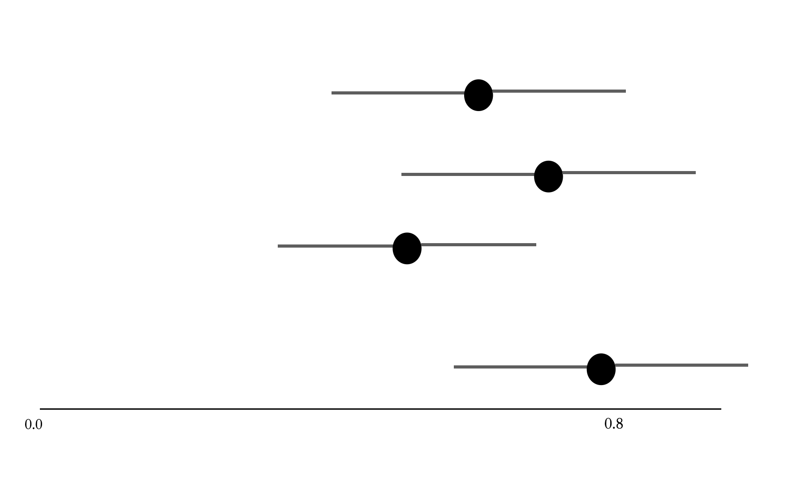
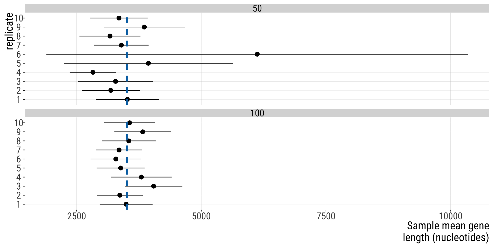
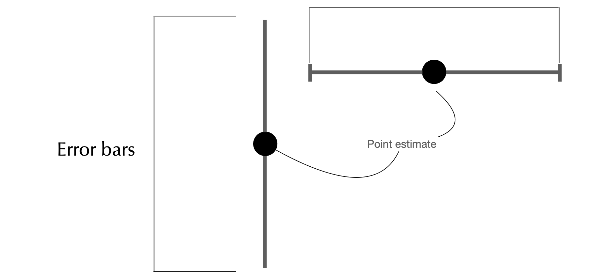
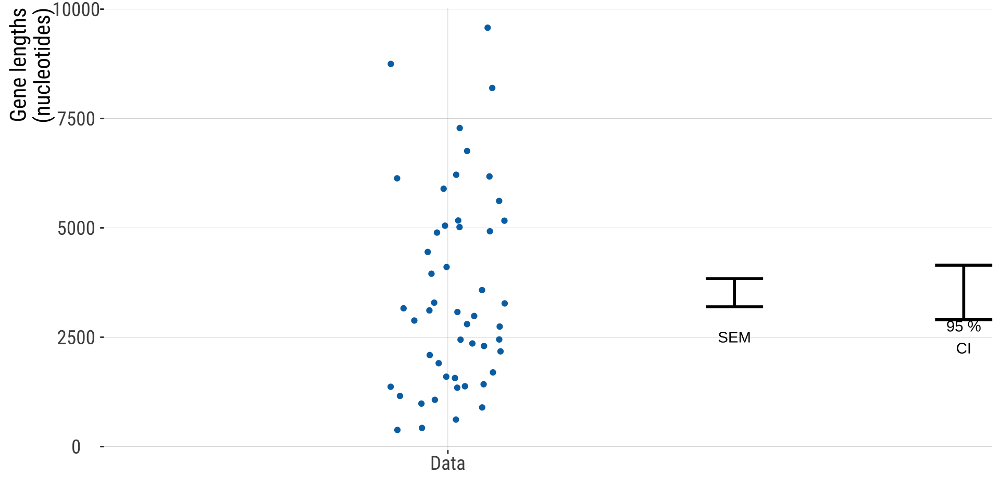
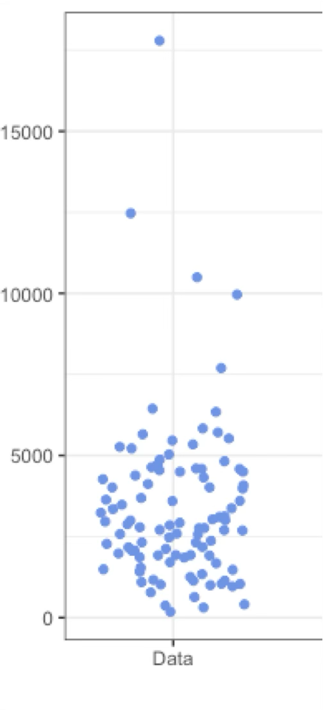
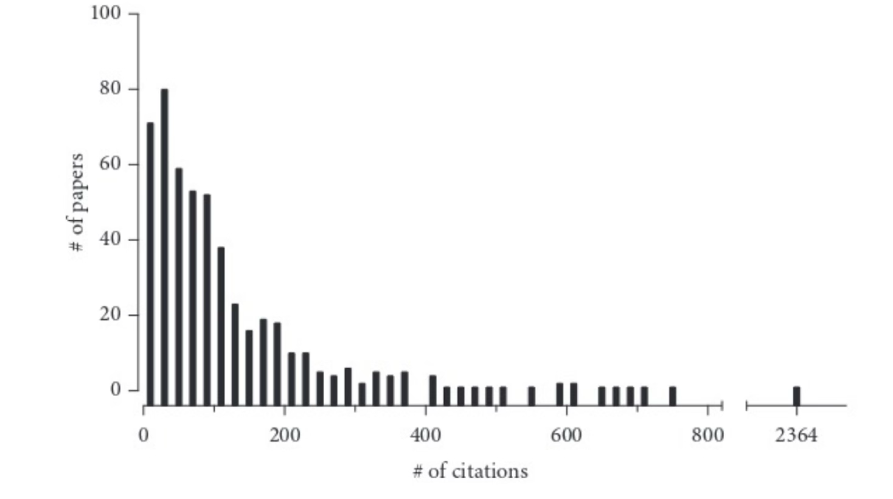
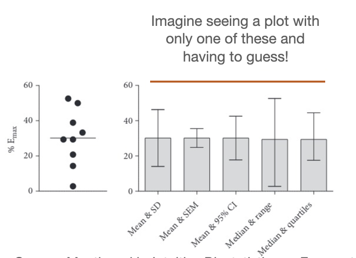

Confidence Intervals, Error bars, pseudoreplication
October 28, 2026
Some code and slide content was borrowed from Yaniv Brandvain and Michael Whitlock.
Some content is based on the WS textbook.
In the case of skewed distributions, a larger sample size is necessary.
The standard deviation fo the sampling distribution of a proportion
If \(p\) (parameter) is known: \(\sigma_{p}=\frac{p(1-p)}{\sqrt{n}}\)
In what we have is \(\hat{p}\) (estimate): \(SE_{\hat {p}}=\frac{\hat p(1-\hat p)}{\sqrt{n}}\)
| Statistic | Parameter (population) | Point estimate (sample) |
|---|---|---|
| Mean | \(\mu\) | \(\bar x, \bar y, \bar X\), etc |
| Standard deviation | \(\sigma\) | \(s\) |
| Standard error of the mean | \(\sigma_{\bar{X}}=\frac{\sigma_{x}}{\sqrt{n}}\) | \(SEM_{\bar{X}}=\frac{s}{\sqrt{n}}\) |
| Proportion | \(p\) | \(\hat{p}\) |
| Standard error of a proportion | \(\sigma_{p}=\frac{p(1-p)}{\sqrt{n}}\) | \(SE_{\hat {p}}=\frac{\hat p(1-\hat p)}{\sqrt{n}}\) |
I highly recommend using these:
Web app from the book: http://www.zoology.ubc.ca/~whitlock/Kingfisher/CIMean.htm Note: this uses the method involvign the Normal distribution. If you click on calculations you will see it. We will learn that later.
And this one: https://shiny.abdn.ac.uk/Stats/apps/app_sampling/ This allows you to do something very similar as to what I did in the slides, step by step.
A range of numbers, estimated from the data, that is is X% likely to contain the parameter value (unknown) within its range.
A confidence interval expresses our level of certainty about an estimate.
What do we mean by X% likely? It depends on the confidence level!
E.g. for a confidence interval encompassing from values 0.1 to 0.5 (inclusive)
Preferable:
Using the parameter (e.g. if we’re estimating the mean): \(0.1<\mu<0.5\)
\(\left[0.1,0.5\right]\)
\(0.3\pm 0.2\)
Fine:
0.1 to 0.5
Do not use: 0.1-0.5 or 0.1–0.5
Why? This can be confusing for negative numbers
Also: always report the confidence level (95%, 99%, etc)

✅ Correct ✅
~95% of 95% confidence intervals calculated from samples include the population mean.
We are 95% confident that the population mean lies within the 95% confidence interval.
😔 Incorrect
Why? The CI either contains the parameter or it does not contain it. The probability is associated with the process that generated the interval. And if we repeat this process many times, 95% of all intervals should in fact contain the true value of the parameter.
Sample size: all other things being equal, bigger \(n\) means lower CI
Confidence level: 0.90 gives narrower range than 0.95. In the long run, ~95% of 95% CIs estimated from random samples will include the population parameter of interest!
Random sampling: just like point estimates such as the mean, are prone to the randomness of a given sample
95% CI for the mean:

The width of the CI is approximately proportional to the reciprocal of the square root of the sample size
\[CI\propto \frac{1}{\sqrt{n}}\]
Two ways, mainly:
For all other cases:
Assumptions:
Sample is random (equality and independence)
Normal distribution
OR
One thing you can know now is that for very large samples, the CLT assumption is generally fulfilled. See here.
If assumptions are met, then…
a rough estimate of the 95% CI for the mean is:
Lower 95% CI: \(\bar x - 2\times SEM_{\bar X}\)
Upper 95% CI: \(\bar x + 2\times SEM_{\bar X}\)
Q: When can I use the rule of thumb that the CI equals the sample mean plus or minus 2 SDs?
Never! In a Gaussian distribution you expect about 95% of the individual values to lie within 2 SD of the mean. But the idea of a CI is to quantify how precisely you know the population mean. For that, you need the sample size to be taken into account.
Q:When can I use the rule of thumb that the CI equals the sample mean plus or minus 2 SEM?
When \(n\) is sufficiently large and the population variable of interest is normally distributed (approximately). We will come back to this. If in doubt, don’t use it!!! [if you do, acknowledge this shortcoming]
What are they?
Lines that extend from a point estimate to reflect the degree of uncertainty of the parameter being estimated

What do they measure?
Unfortunately, it depends on what one wants to convey: - Confidence intervals - 1 Standard error - 2 Standard errors - etc
Disclaimer: this is a general statistical principle and for this course we will abide to it. Standard deviation is a measure of spread/variability, not of uncertainty. It is possible that you learn elsewhere that in a specific field this is tolerated more than others.

If =< 100 data points: just plot it all in a strip chart (remember to add jitter and transparency)
Otherwise, to avoid clutter: violin plot, CFD, boxplot

Use CI (easier to interpret, wider) or SEM (narrower, harder to interpret) to compare: - two or more means - your estimate vs. model predictions
Example: showing that the second plague (Yersinia pestis) pandemic shaped the gene pool of certain populations

A very asymmetrical distribution. Remade from Colquhoun (2003). The number of citations (X-axis) received (within five years of publication) by 500 papers randomly chosen from the journal Nature. The bin width is 20 citations. The first bar shows that 74 papers received between zero and 20 citations, the second bar shows that 80 papers received between 21 and 40 citations, and so on. Example from: Intuitive Biostatistics
How will your reader know if it’s the SD, SEM, CI, range, or something else?

Source: Mentioned in Intuitive Biostatistics as Frazer et al. (2006),a study of the bladder-relaxing effects of norepinephrine in old rats.
Pseudoreplication is the error that occurs when samples are not independent, but they are treated as though they are.
Thus the sample size is smaller than claimed.
Pseudoreplication provides a false sense of high certainty.
This is not an uncommon issue in published papers.
~ 1 in 8 (12.5%) field ecology studies (Hurlbert & White, 1993; Heffner et al. 1996)
~ 40% for animal experiments (Lazic et al. 2018)!
You are interested in estimating the average pulse rate of mountain climbers. Since they are hard to find, you decide to take 10 measurements from each climber. You study 6 climbers, so you have 60 measures. What is your sample size (n)?
It’s 6. But you can and should use the extra data. How? Take the mean for each climber, so that you have 6 pulse rates, one for each climber (\(n=6\)).
This is a simple example but, in practice, pseudoreplication is hard to identify and things differ by field
Pseudoreplication problems arise from the organisational complexity of life itself. (Lazic et al. (2018)
The best place to start: think about what are the biological and experimental units of your and look for field specific discussion on the topic.
E.g., this publication talks about this pseudoreplication in cell culture and animal experiments:
To ensure (…) results can be extrapolated to the population of interest, there must also be replication relevant to the hypothesis being tested. (…) define the scientific or biological unit of interest, which is the entity (i.e., people, animals, and cells) that we would like to test a hypothesis or draw a conclusion about. (…) to conclude that a drug is better than a placebo, a large number of patients are required because the hypothesis is about patients. We cannot give Jim the drug and Bob the placebo, take a daily measurement for several weeks, and then make general conclusions about the drug’s efficacy. 1
What to look out for:
Recommendation:
Parameter estimates are influenced by chance.
The sampling distribution considers what could have happened upon sampling.
The standard error is the standard deviation of the sampling distribution.
If producing a real sampling distribution is not possible, a bootstrapping distribution based on the original sample tends to be very similar to the real sampling distribution.
Confidence intervals bound plausible parameter values.
Uncertainty decreases and precision increases with sample size.
Add error bars to graphs to illustrate standard errors or confidence intervals. Make sure to clarify which is being illustrated in the figure legend.
Watch out for pseudoreplication.